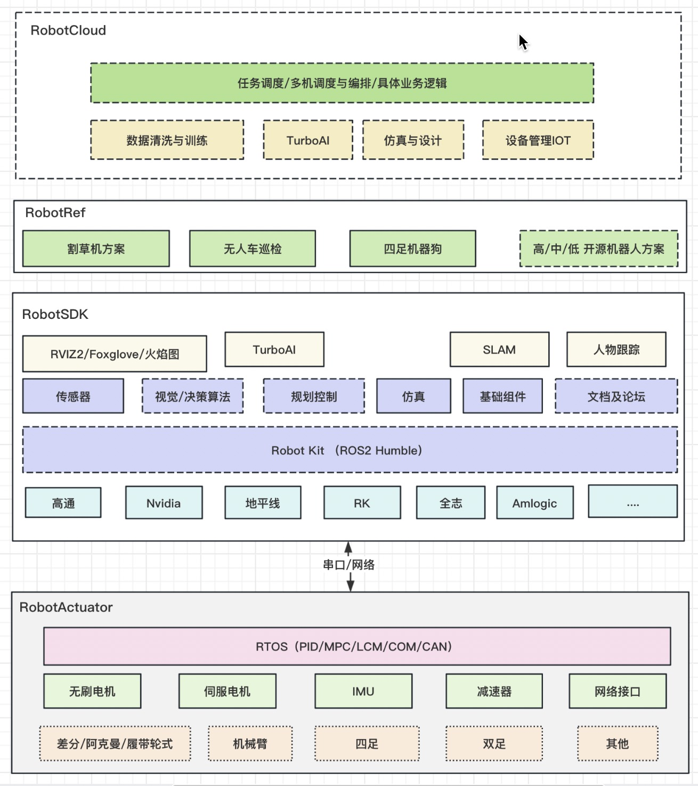

1. 概述
RobotKit是面向机器人开发者推出的机器人开发套件，内置多传感器驱动及传感器融合能力，提供建图，定位，感知，路径规划等算法，提供支持无刷电机和PID/MPC等运动规控算法；为开发者加速开发机器人，提供云端仿真，开发环境和文档，并提供四足机器人参考设计方案；指导开发者一步一步的搭建一个完整机器人；
2. 功能介绍
RobotKit 为机器人开发提供一整套的工具集合，包含机器人参考设计案例，感知、决策和规划的RobotSDK，形态各异运控RobotActuatorl，提供丰富文档，论坛。
核心功能：
内置机器人SLAM/避障/规划等算法
内置常用各种传感器驱动和多传感器融合方案
多态机器人运动机构的支持
提供TurboAI的深度模型加速能力
提供机器人建图，定位和感知的应用案例
提供丰富文档，视频资料和论坛
亮点：
“效率”：提供最少层级、高性能获取设备数据的能力
“灵活”：模块化传感器功能，灵活组合不同设备
“高可扩展”：支持日益多样化形态的设备及系统，以及插件化算法适用于不同场景
3. RobotKit核心模块
| 内容 | 描述 |
|---|---|
| RobotCloud | 提供机器人云端的仿真，数据训练和机器人管理能力 |
| RobotRef | 各种机器人的参考设计方案，带领开发者一步一步搭建一个完整机器人形态 |
| RobotSDK | 作为机器人的“大脑”，提供感知、决策、规划和TurboAI的模型部署和加速能力 |
| RobotActuator | 作为机器人“小脑”，内置实时RTOS和PID控制算法 |
| Doc | 提供机器人开发者的所有的文档资料，帮助开发者快速入门｜ |
4. RobotKit框图
RobotKit 整体框架示意图
